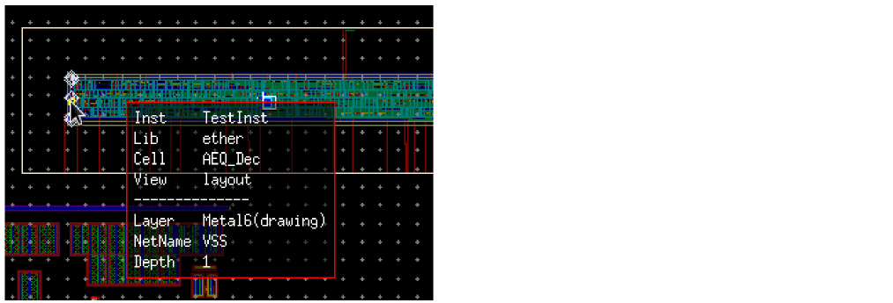

Editing In Place a Trace
The Net Tracer enables you to Edit In Place a traced object, allowing you to perform an interactive edit of the instance. This functionality enables you to focus only on the traced objects for running the Edit In Place instead of performing the operation on all the objects in the cellview.
To run the Net Tracer Edit In Place command:
- Add at least one trace to the cellview.
- Click the Net Tracer EIP toolbar button and click the traced object to be edited in place.
The traced object is made available for editing in place and its corresponding connectivity reference opened.
Hovering the pointer over the selected object displays an information balloon, as displayed in the figure below.

To prevent the information balloon from opening:
- Click the Net Tracer EIP toolbar button and press F3.
-
The Net Tracer Edit In Place dialog box displays.
-
Deselect the Show info balloon check box.
Alternatively, you can use thenetTracerShowInfoBalloonenvironment variable to control the display of the information balloon.
The EIP information balloon is not displayed the next time you hover the mouse on a traced object.
Related Topics
Return to top